工作台¶
工作台是OpsAny的入口操作平台，提供用户所需要的常用管理工具和个人设置，比如工单管理和密钥管理系统，同时能够为运维工程师提供一套便捷操作，比如包含主要平台的数据展示界面，用户可以通过界面了解相关业务环境的综合情况。

在顶部的平台导航中，可以看到OpsAny的所有平台的入口，用户可以快速的链接到对应的平台进行运维管理。
运维中心¶
运维中心提供企业日常管理相关的功能模块，其中包括工单管理，密钥管理，用户信息管理，方便用户对平台的个性化配置。
工单管理¶
工单管理能够帮助企业规范内部的管理流程，提高内部人员的沟通效率和管理效率。在使用工单管理之前，需要管理员根据企业的实际情况，进行工单流程和工单的定义之后，将工单发布后，用户即可在工单管理中提交工单。

点击提交工单，进入工单的提单流程。

第一步：选择所属工单，在左侧导航栏处找到所需目录，右侧会展示目录相关的工单数据。 点击提单。
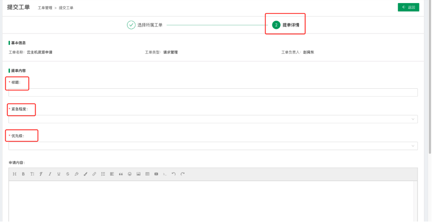
第二步：输入提单的具体内容，提单内容处根据不同的工单流程会展示不同的提单内容。关注工单，可以跟踪此工单的进度更新情况，及时发布消息通知提单者。

工单提交完成，会在我提交的目录下面展示已经提交的工单。点击查看详情，可以查看具体的详情信息，如果此工单支持撤单，提单人可以在工单未进行处理之前进行撤单操作。
点击查看详情按钮
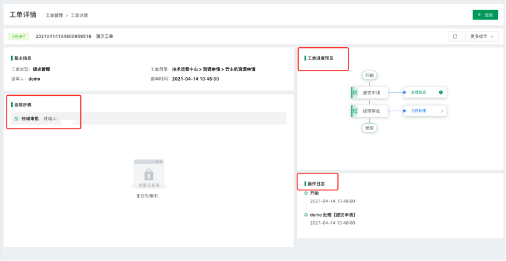
点击操作日志的每条记录，可以展示当前记录的具体执行详情。
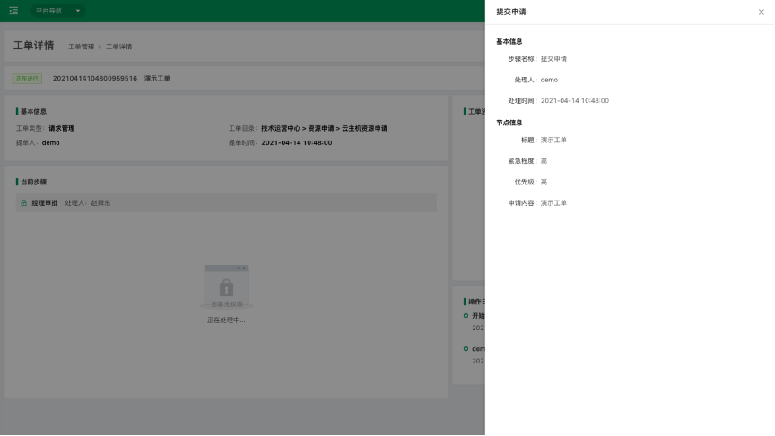
处理工单
在我的待办中可以查看需要处理的工单。

点击处理按钮，进入处理工单界面。
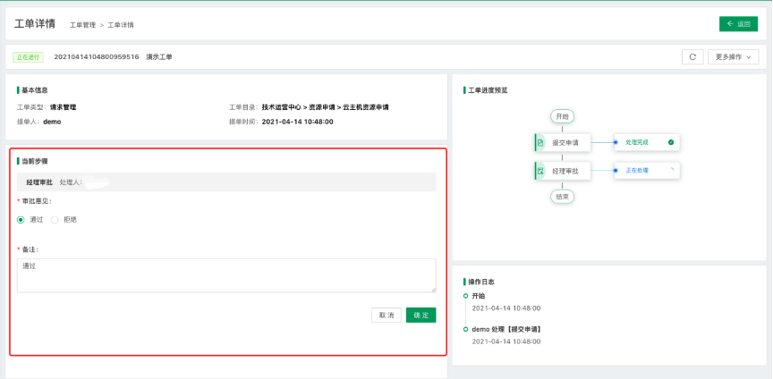
工单处理人可以在当前步骤处填写需要的字段内容进行处理，处理后当前工单会在我的已办列表中。
工单流程全部处理完成
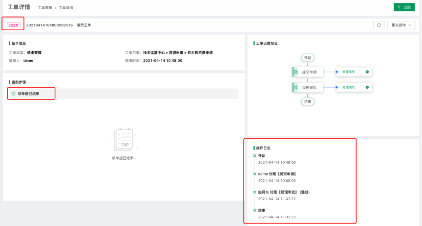
工单处理完成，查看详情信息会展示工单的整个处理流程。
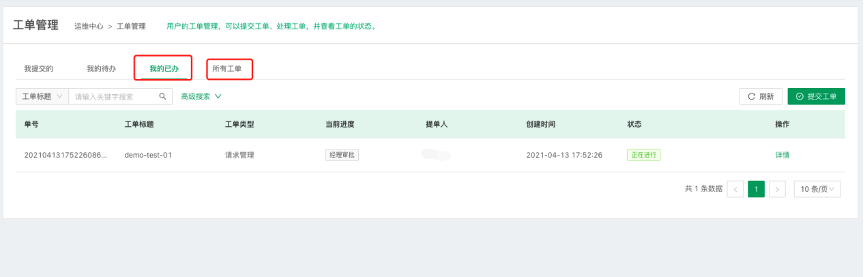
用户可以点击我的已办和所有工单，查看经处理的工单和所有的与用户相关工单。
个人设置¶
个人设置包含用户的平台个人信息设置和密码修改功能，用户的个人信息主要应用于手机短信的发送和邮箱信息的发送，信息的来源包含监控平台告警信息，工单处理的进度消息等等。
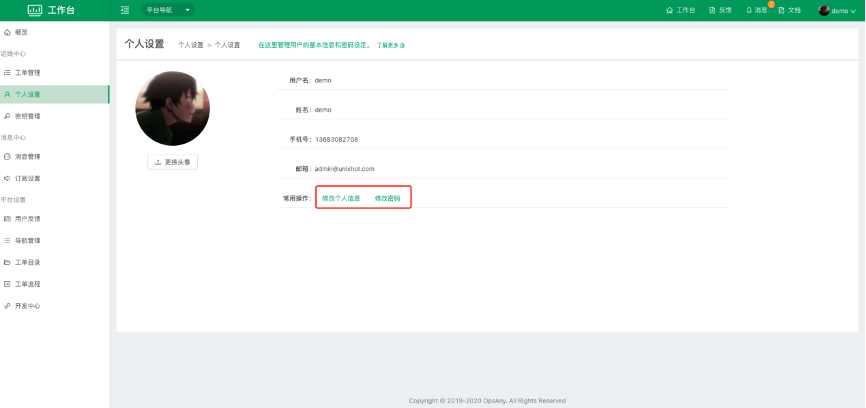
密钥管理¶
密钥主要是用于用户管理云主机、物理机和虚拟机时使用，可以将私钥上传至平台，将公钥保存至相应的系统中。
使用场景
管控平台在主机管理界面添加主机时，验证方式选择密钥，会出现密钥选择框。
密钥主要由两种使用方法 第一种是利用系统自动生成密钥，然后可以进行密钥的下载和查看。 第二种是上传本地密钥，由系统来管理使用。

消息中心¶
消息中心包含了OpsAny内所有平台的消息管理，平台会内置常用的消息类型，以及消息模板，比如脚本作业执行完毕，会发送一条消息，通过所涉及的用户。消息中心同时也可以方便用户之间协同办公，规范化工作环境。
消息管理¶
消息管理主要用于用户对平台消息的管理，帮助用户能够更及时的掌握平台的执行状态，同时支持根据不同的平台查看和管理消息，用户可以通过点击消息名称和详情查看具体消息内容。

订阅设置¶
消息接收方式有三种主要形式：站内消息、手机短信、电子邮箱。可以通过打开或者关闭开关来控制消息是否发送。 手机号码和电子邮箱使用个人设置中用户所填写的号码信息。

支持用户全部关闭某一项消息开关，同时用户也可根据使用场景来自定义消息发送。
平台设置¶
用户反馈¶
用户反馈主要作用是方便使用者更好的给平台管理者提供有效的使用反馈信息，能够更快捷的优化和改进平台系统。平台管理员可以通过解决与未解决标识每一个反馈的处理结果。
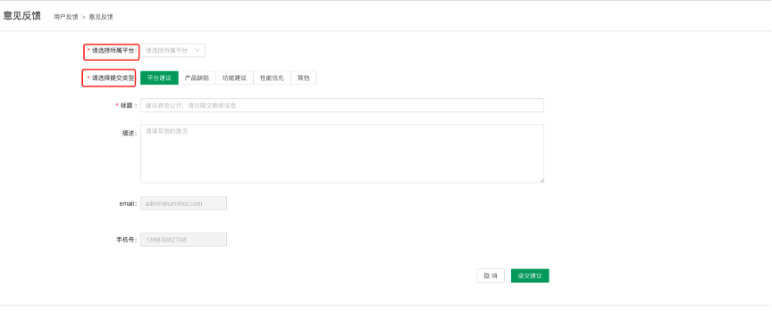
用户可以根据不同的平台、不同的意见类型填写反馈信息，方便平台管理者更有效的优化平台。
导航管理¶
导航管理主要功能是方便用户能够快速进入各个平台，支持用户自定义配置，同时也可以加入第三方服务的URL，便捷用户在平台内进入相关组件的界面。
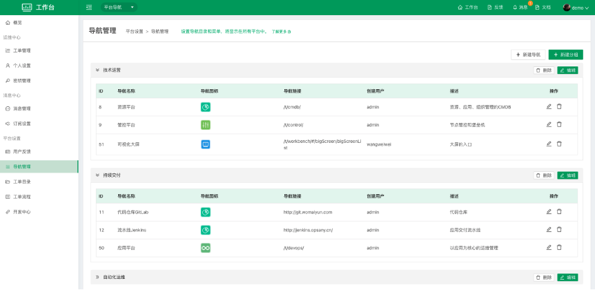
导航展示位置
在顶部菜单中平台导航中查看。
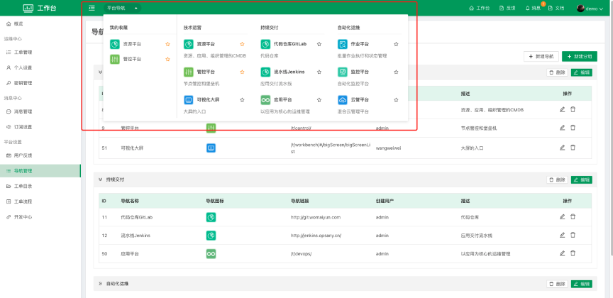
新建导航功能

导航图标：用户可以自定义上传导航图标。
所属分组：根据页面展示分组选择相应分组。
导航名称：用户可以自定义导航名称。
导航链接：用户可以填写自定义URL，这里需要写全路径（例：https://www.opsany.com）
工单目录¶
工单目录主要作用是对工单的进行分组整合，方便用户可以更高效的管理。
新建工单目录

创建工单

点击右上角新增工单按钮，进入设置工单页面。
工单名称：用户可以根据工单的使用场景自定义工单的名称。
关联流程版本：用户可以根据工单的审批流程或者操作流程选择工单流程。
工单类型：系统内置了四种常用的类型，请求管理，变更管理，事件管理，问题管理。
可见范围：用户选择当前工单哪些用户可以使用。
所在目录：用户可以选择工单放置哪个工单目录下面。
负责人：用户可以选择当前工单的负责人。
注意： 工单如果在被使用状态情况下不能进行删除操作。
工单流程¶
公共字段
系统内置了部分常用的字段，内置字段可以编辑但是不可以删除。拥有权限的用户，可以根据管理需要自行新增公共字段。

点击新增字段按钮，用户便可以增加公共字段。

字段类型：系统内置了单行文本、多行文本、数字、下拉菜单、单选框、多选框、日期、时间、链接、附件、富文本。
校验方式：选择对当前字段的校验方式。
工单角色：主要是指承接不同服务的角色。例如审批账号开通的负责人，开通账号远程准入的实施人员。根据实际生产环境来进行角色和人员的增删改日常管理。

点击新建角色按钮可以进行角色的新增操作。
公共表单
从公共字段中选择适用的字段组成不同的字段表达，应用到流程设计中。当新建流程时，选定了某个公共表单，可以直接引用模型中的字段作为流程节点中的字段，并可根据表单的更新保持更新。
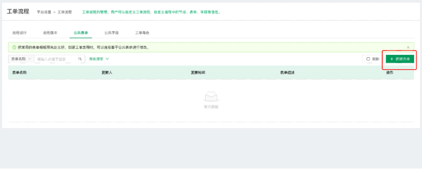
点击新建表单。
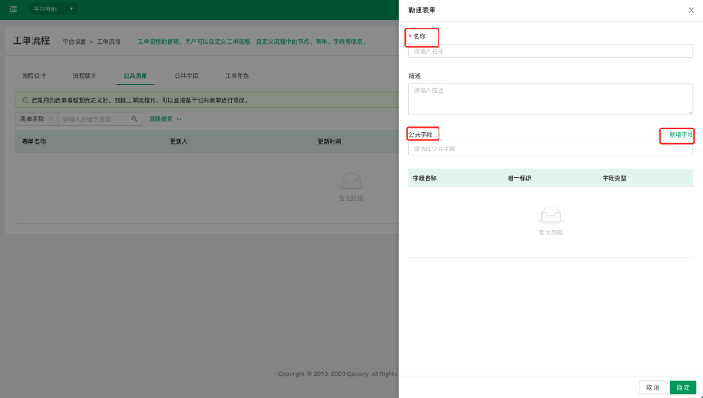
公共字段：可以选择公共字段中已有的字段进行添加。
新增字段：如果公共字段中没有需要的字段，可以点击新增字段，直接添加公共字段进行使用。
流程设计
各种流程模型的配置管理入口，系统的流程模型库。通过流程引擎进行服务流程的节点设置及日常维护。流程设计列表可以视为流程模板库。包括流程的新建，编辑，删除，部署。
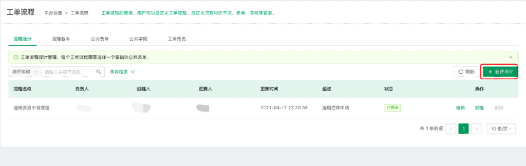
新增：新建流程的入口。
状态：草稿，已启用。
部署：流程设计完成后需要部署才可以正式应用至服务。部署完成后，在“流程版本”中会新增一条对应的版本记录。
删除：删除流程模板。模板库中的流程删除，并不会影响到在线已经使用中的流程实例和单据。
流程设计第一步

流程名称：输入该流程的名字。
公共表单：列表来自“公共表单”中配置的表单。选择合适的公共表单，可以引用相应的公共字段。
负责人：该流程的负责人信息。
描述：对该流程的说明描述。
流程设计第二步
目前节点类型分为：普通节点，审批节点。
普通节点：该节点为人工手动进行处理反馈。
审批节点：审批动作节点。内置审批内容和审批方式。

点击左侧节点处加号，可以增加节点，会在当前节点下方紧接着增加一个节点。
新增字段：点击“新增字段”按钮进行其他字段的自定义配置。
选择表单字段：根据上一步选择的公共表单，可以快速选择公共字段。
字段预览：展示当前节点的表单样式。
点击右下角确定，是对当前节点的输入信息进行保存，以免误操作。
点击左下角下一步保存当前所有的操作内容，进入下一步操作。
流程设计第三步

是否支持撤单：当工单流程已经有处理人已经处理，当前工单就不支持撤单，反之可以进行撤单操作，撤单后当前工单就不会保存。
是否立即部署流程：部署过后流程会生产新的流程版本。
部署流程版本名称：用户可以自定义流程版本的名称。
流程版本
流程设计部署完成之后会生成流程版本。
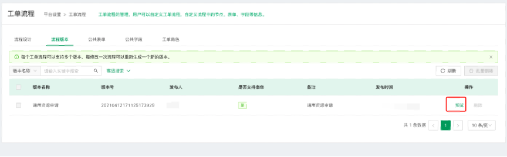
点击预览，可以对当前流程进行字段预览。
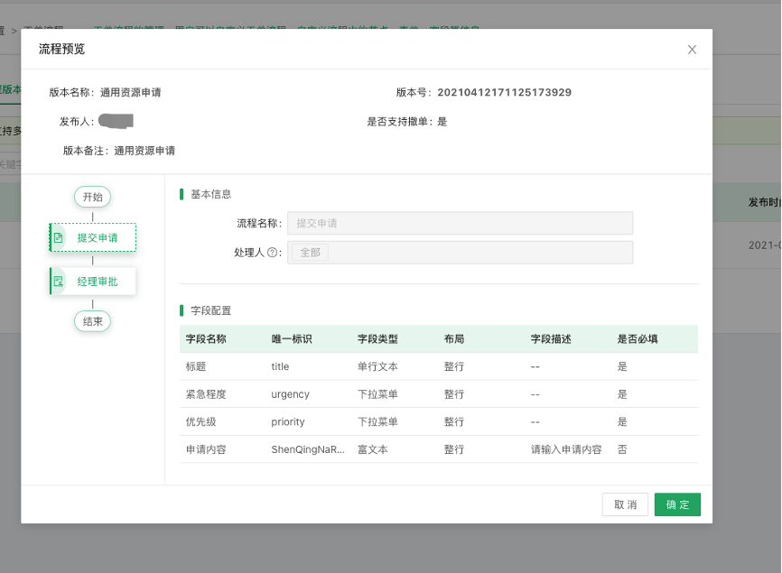